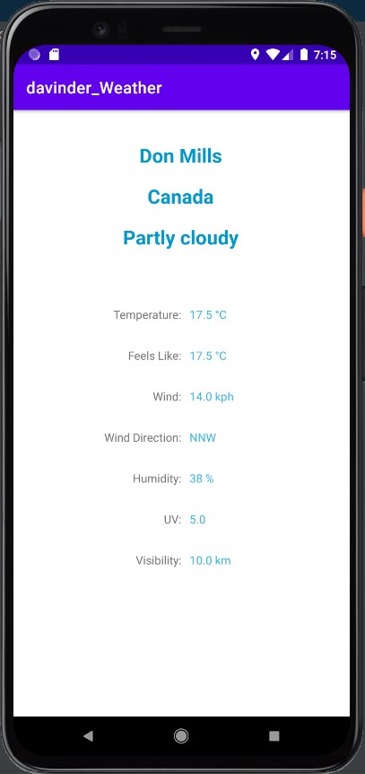

Android · Java · REST API
Weather App
A Java Android app that shows current weather for your location or any place you search, using WeatherAPI.com and Retrofit.
Overview
The app reads the device location through Google Play Services, calls WeatherAPI.com’s current.json endpoint, and presents the current conditions on a single screen. You can also look up weather by place name instead of relying on location. Built in 2021 as an early exercise in consuming a REST API from Android.

Highlights
- Current conditions for the device’s location, resolved with Google Play Services location.
- Lookup by place name, passed to the API as the
qquery parameter. - Shows city and country, condition, temperature, feels-like, wind speed and direction, humidity, UV index and visibility.
- Networking with Retrofit and a Gson converter, mapping JSON responses into typed model classes.
- Small, separated structure: a
RetrofitClient, anAPIinterface, aLocationHelperand dedicated models.